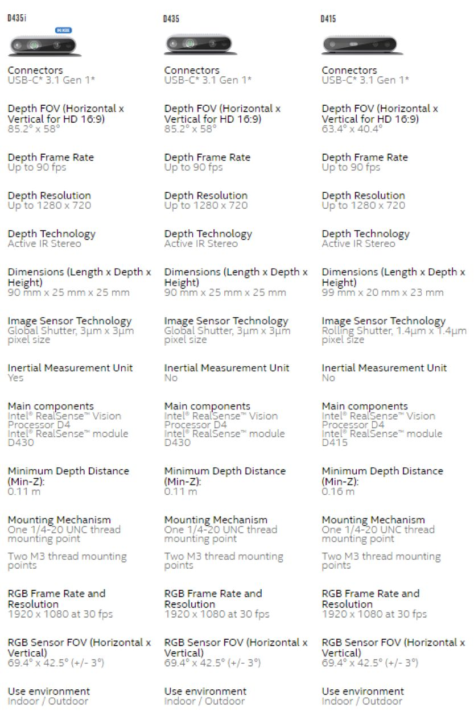
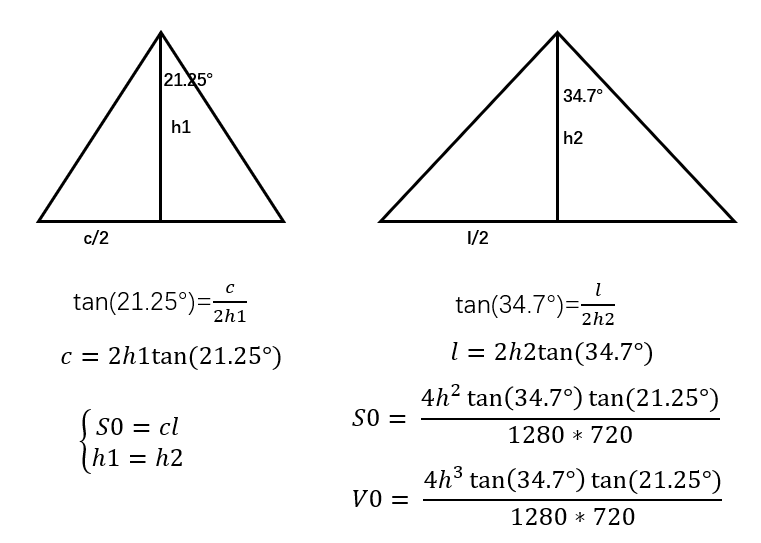

<!DOCTYPE html>


<html lang="zh-CN">
  

    <head>
      <meta charset="utf-8" />
        
      <meta
        name="viewport"
        content="width=device-width, initial-scale=1, maximum-scale=1"
      />
      <title>使用D435测量体积 |  墨冰的博客</title>
  <meta name="generator" content="hexo-theme-ayer">
      
      <link rel="shortcut icon" href="/favicon.ico" />
       
<link rel="stylesheet" href="/dist/main.css">

      <link
        rel="stylesheet"
        href="https://cdn.jsdelivr.net/gh/Shen-Yu/cdn/css/remixicon.min.css"
      />
      
<link rel="stylesheet" href="/css/custom.css">
 
      <script src="https://cdn.jsdelivr.net/npm/pace-js@1.0.2/pace.min.js"></script>
       
 

      <link
        rel="stylesheet"
        href="https://cdn.jsdelivr.net/npm/@sweetalert2/theme-bulma@5.0.1/bulma.min.css"
      />
      <script src="https://cdn.jsdelivr.net/npm/sweetalert2@11.0.19/dist/sweetalert2.min.js"></script>

      <!-- mermaid -->
      
      <style>
        .swal2-styled.swal2-confirm {
          font-size: 1.6rem;
        }
      </style>
    <link href="https://cdn.bootcss.com/KaTeX/0.11.1/katex.min.css" rel="stylesheet" /></head>
  </html>
</html>


<body>
  <div id="app">
    
      
    <main class="content on">
      <section class="outer">
  <article
  id="post-D435VolumeMeasurement"
  class="article article-type-post"
  itemscope
  itemprop="blogPost"
  data-scroll-reveal
>
  <div class="article-inner">
    
    <header class="article-header">
       
<h1 class="article-title sea-center" style="border-left:0" itemprop="name">
  使用D435测量体积
</h1>
 

      
    </header>
     
    <div class="article-meta">
      <a href="/2020/03/11/D435VolumeMeasurement/" class="article-date">
  <time datetime="2020-03-11T06:00:00.000Z" itemprop="datePublished">2020-03-11</time>
</a> 
  <div class="article-category">
    <a class="article-category-link" href="/categories/%E9%95%BF%E5%89%91%E8%90%BD%E6%9C%88%E5%85%89/">长剑落月光</a>
  </div>
  
<div class="word_count">
    <span class="post-time">
        <span class="post-meta-item-icon">
            <i class="ri-quill-pen-line"></i>
            <span class="post-meta-item-text"> 字数统计:</span>
            <span class="post-count">820</span>
        </span>
    </span>

    <span class="post-time">
        &nbsp; | &nbsp;
        <span class="post-meta-item-icon">
            <i class="ri-book-open-line"></i>
            <span class="post-meta-item-text"> 阅读时长≈</span>
            <span class="post-count">3 分钟</span>
        </span>
    </span>
</div>
 
    </div>
      
    <div class="tocbot"></div>


  
    <div class="article-entry" itemprop="articleBody">
       
  <h1 id="使用d435测量体积">使用D435测量体积</h1>
<h2 id="简介">简介</h2>
<p>在实际应用中，经常需要测量诸如货架上的空间剩余空间，这时候就需要测量目标空间的体积。本次我们使用D435进行指定空间的剩余体积测量。 <span id="more"></span> ## 思路 ### 思考 要测定空间中的的体积，根据体积公式V = S * h，我们首先要获得底面积和高度。高度可以用D435的测距来得到。但底面积比较难获得，因为随着距离的拉远，区域内的面积会改变，这是需要解决的问题。 ### 从相机视角获得面积 <br />
从官方给的数据来看，D435彩色相机的视角为69.4°<em>42.5°,也就是说横向视角为69.4°，纵向视角为42.5°，将这视角简化为三角形可以得到距离和视野长度之间的关系，如下图：<br />
<br />
我们将每一个像素视为一个单位，根据上述式子可以算出单位面积S0和单位体积V0。 ### 总体思路 现在看来，求得指定区域的体积的思路就很明确了： </em> 获取彩色图和深度图 * 将深度图对齐到彩色图 * 划定测量区域 * 获取每个像素点对应的深度h * 计算每个单位体积S0 * 将单位体积求和得到总体体积</p>
<h2 id="实现代码">实现代码</h2>
<figure class="highlight python"><table><tr><td class="gutter"><pre><span class="line">1</span><br><span class="line">2</span><br><span class="line">3</span><br><span class="line">4</span><br><span class="line">5</span><br><span class="line">6</span><br><span class="line">7</span><br><span class="line">8</span><br><span class="line">9</span><br><span class="line">10</span><br><span class="line">11</span><br><span class="line">12</span><br><span class="line">13</span><br><span class="line">14</span><br><span class="line">15</span><br><span class="line">16</span><br><span class="line">17</span><br><span class="line">18</span><br><span class="line">19</span><br><span class="line">20</span><br><span class="line">21</span><br><span class="line">22</span><br><span class="line">23</span><br><span class="line">24</span><br><span class="line">25</span><br><span class="line">26</span><br><span class="line">27</span><br><span class="line">28</span><br><span class="line">29</span><br><span class="line">30</span><br><span class="line">31</span><br><span class="line">32</span><br><span class="line">33</span><br><span class="line">34</span><br><span class="line">35</span><br><span class="line">36</span><br><span class="line">37</span><br><span class="line">38</span><br><span class="line">39</span><br><span class="line">40</span><br><span class="line">41</span><br><span class="line">42</span><br><span class="line">43</span><br><span class="line">44</span><br><span class="line">45</span><br><span class="line">46</span><br><span class="line">47</span><br><span class="line">48</span><br><span class="line">49</span><br><span class="line">50</span><br><span class="line">51</span><br><span class="line">52</span><br><span class="line">53</span><br><span class="line">54</span><br><span class="line">55</span><br><span class="line">56</span><br><span class="line">57</span><br><span class="line">58</span><br><span class="line">59</span><br><span class="line">60</span><br><span class="line">61</span><br><span class="line">62</span><br><span class="line">63</span><br><span class="line">64</span><br><span class="line">65</span><br><span class="line">66</span><br><span class="line">67</span><br><span class="line">68</span><br><span class="line">69</span><br><span class="line">70</span><br><span class="line">71</span><br><span class="line">72</span><br><span class="line">73</span><br><span class="line">74</span><br><span class="line">75</span><br><span class="line">76</span><br><span class="line">77</span><br><span class="line">78</span><br><span class="line">79</span><br><span class="line">80</span><br><span class="line">81</span><br><span class="line">82</span><br><span class="line">83</span><br><span class="line">84</span><br><span class="line">85</span><br><span class="line">86</span><br><span class="line">87</span><br><span class="line">88</span><br><span class="line">89</span><br><span class="line">90</span><br><span class="line">91</span><br><span class="line">92</span><br><span class="line">93</span><br><span class="line">94</span><br><span class="line">95</span><br><span class="line">96</span><br><span class="line">97</span><br><span class="line">98</span><br><span class="line">99</span><br><span class="line">100</span><br><span class="line">101</span><br></pre></td><td class="code"><pre><span class="line"><span class="keyword">import</span> pyrealsense2 <span class="keyword">as</span> rs</span><br><span class="line"><span class="keyword">import</span> numpy <span class="keyword">as</span> np</span><br><span class="line"><span class="keyword">import</span> cv2</span><br><span class="line"><span class="keyword">import</span> sys</span><br><span class="line"><span class="keyword">import</span> math</span><br><span class="line"></span><br><span class="line">pipeline = rs.pipeline()</span><br><span class="line">config = rs.config()</span><br><span class="line">config.enable_stream(rs.stream.depth, <span class="number">1280</span>, <span class="number">720</span>, rs.<span class="built_in">format</span>.z16, <span class="number">30</span>)<span class="comment">#此处比例必须为16：9</span></span><br><span class="line">config.enable_stream(rs.stream.color, <span class="number">1280</span>, <span class="number">720</span>, rs.<span class="built_in">format</span>.bgr8, <span class="number">30</span>)</span><br><span class="line"></span><br><span class="line">profile = pipeline.start(config)</span><br><span class="line"></span><br><span class="line">mouse_config_p = <span class="number">0</span></span><br><span class="line"></span><br><span class="line"><span class="comment">#单位面积/体积基数</span></span><br><span class="line">S0 = <span class="number">4</span>*math.tan(<span class="number">34.7</span>/<span class="number">180</span>*math.pi)*math.tan(<span class="number">21.25</span>/<span class="number">180</span>*math.pi)/<span class="number">1280</span>/<span class="number">720</span></span><br><span class="line"></span><br><span class="line"><span class="comment"># 空间坐标</span></span><br><span class="line">x_min = <span class="number">0</span></span><br><span class="line">y_min = <span class="number">0</span></span><br><span class="line">x_max = <span class="number">0</span></span><br><span class="line">y_max = <span class="number">0</span></span><br><span class="line"></span><br><span class="line"><span class="comment">#鼠标交互</span></span><br><span class="line"><span class="function"><span class="keyword">def</span> <span class="title">onmouse</span>(<span class="params">event, x, y, flags, param</span>):</span>      <span class="comment">#标准鼠标交互函数</span></span><br><span class="line">    <span class="keyword">global</span> mouse_config_p,x_min,y_min,x_max,y_max</span><br><span class="line">    <span class="keyword">if</span> event==cv2.EVENT_LBUTTONDOWN:           <span class="comment">#当鼠标点击时</span></span><br><span class="line">        <span class="keyword">if</span> mouse_config_p == <span class="number">0</span> :</span><br><span class="line">            x_min = x                        <span class="comment">#获取坐标</span></span><br><span class="line">            y_min = y</span><br><span class="line">            mouse_config_p += <span class="number">1</span></span><br><span class="line">        <span class="keyword">elif</span> mouse_config_p == <span class="number">1</span>:</span><br><span class="line">            x_max = x</span><br><span class="line">            y_max = y</span><br><span class="line">            mouse_config_p += <span class="number">1</span></span><br><span class="line">            <span class="keyword">with</span> <span class="built_in">open</span>(<span class="string">&quot;./config.ini&quot;</span>,<span class="string">&quot;w&quot;</span>) <span class="keyword">as</span> f: <span class="comment">#存储到文件（预留）</span></span><br><span class="line">                f.write(<span class="built_in">str</span>(x_min))</span><br><span class="line">                f.write(<span class="string">&quot; &quot;</span>)</span><br><span class="line">                f.write(<span class="built_in">str</span>(y_min))</span><br><span class="line">                f.write(<span class="string">&quot; &quot;</span>)</span><br><span class="line">                f.write(<span class="built_in">str</span>(x_max))</span><br><span class="line">                f.write(<span class="string">&quot; &quot;</span>)</span><br><span class="line">                f.write(<span class="built_in">str</span>(y_max))</span><br><span class="line"></span><br><span class="line"><span class="comment">#划定选区</span></span><br><span class="line"><span class="function"><span class="keyword">def</span> <span class="title">Region_config</span>():</span></span><br><span class="line">    finish = <span class="literal">False</span></span><br><span class="line">    <span class="keyword">while</span> finish == <span class="literal">False</span>:                    <span class="comment">#循环直到获取到有效帧</span></span><br><span class="line">        cv2.namedWindow(<span class="string">&#x27;FreshCompanion&#x27;</span>)</span><br><span class="line">        cv2.setMouseCallback(<span class="string">&#x27;FreshCompanion&#x27;</span>, onmouse) <span class="comment">#绑定鼠标动作</span></span><br><span class="line">        frames = pipeline.wait_for_frames()     <span class="comment">#获取帧</span></span><br><span class="line">        color_frame = frames.get_color_frame()  <span class="comment">#获取彩色帧</span></span><br><span class="line">        <span class="keyword">if</span> <span class="keyword">not</span> color_frame :</span><br><span class="line">            <span class="keyword">continue</span></span><br><span class="line">        color_image = np.asanyarray(color_frame.get_data())</span><br><span class="line">        cv2.imshow(<span class="string">&quot;FreshCompanion&quot;</span>, color_image)</span><br><span class="line">        cv2.waitKey(<span class="number">1</span>)                         <span class="comment">#必须使用waitkey，否则会卡住</span></span><br><span class="line">        <span class="keyword">if</span> x_min != <span class="number">0</span> <span class="keyword">and</span> y_min != <span class="number">0</span> <span class="keyword">and</span>  x_max != <span class="number">0</span> <span class="keyword">and</span> y_max != <span class="number">0</span>: <span class="comment">#判断是否完成</span></span><br><span class="line">            finish = <span class="literal">True</span></span><br><span class="line"></span><br><span class="line"><span class="function"><span class="keyword">def</span> <span class="title">get_V</span>():</span></span><br><span class="line">    <span class="keyword">while</span> <span class="literal">True</span>:</span><br><span class="line"></span><br><span class="line">        <span class="keyword">for</span> i <span class="keyword">in</span> <span class="built_in">range</span>(<span class="number">5</span>):<span class="comment">#忽略前几帧</span></span><br><span class="line">            pipeline.wait_for_frames()</span><br><span class="line"></span><br><span class="line">        frames = pipeline.wait_for_frames()</span><br><span class="line"></span><br><span class="line">        depth_frame = frames.get_depth_frame()<span class="comment">#获取深度帧</span></span><br><span class="line"></span><br><span class="line">        color_frame = frames.get_color_frame()<span class="comment">#获取图像帧</span></span><br><span class="line"></span><br><span class="line">        <span class="keyword">if</span> <span class="keyword">not</span> depth_frame <span class="keyword">or</span> <span class="keyword">not</span> color_frame:</span><br><span class="line">            <span class="keyword">continue</span></span><br><span class="line"></span><br><span class="line">        <span class="comment">#转换为numpy数组</span></span><br><span class="line">        depth_image = np.asanyarray(depth_frame.get_data())</span><br><span class="line">        color_image = np.asanyarray(color_frame.get_data())</span><br><span class="line"></span><br><span class="line"></span><br><span class="line">        depth = np.asanyarray(depth_frame.get_data())</span><br><span class="line">        <span class="comment">#仅保留选取</span></span><br><span class="line">        depth = depth[y_min:y_max,x_min:x_max].astype(<span class="built_in">float</span>)</span><br><span class="line"></span><br><span class="line">        depth_scale = profile.get_device().first_depth_sensor().get_depth_scale()<span class="comment">#获取设备统计单位</span></span><br><span class="line">        depth = depth[depth!=<span class="number">0</span>]<span class="comment">#忽略0元素</span></span><br><span class="line">        depth = depth * depth_scale</span><br><span class="line">        V0 = depth*depth*depth*S0*<span class="number">1000</span></span><br><span class="line">        V = np.<span class="built_in">sum</span>(V0)</span><br><span class="line">        dist, _, _, _ = cv2.mean(depth)</span><br><span class="line">        cv2.rectangle(color_image, (x_min, y_min),(x_max, y_max), (<span class="number">255</span>, <span class="number">255</span>, <span class="number">255</span>), <span class="number">2</span>)</span><br><span class="line">        cv2.putText(color_image, <span class="string">&quot;V = &quot;</span> + <span class="built_in">str</span>(V) + <span class="string">&quot;L&quot;</span>, (<span class="number">10</span>, <span class="number">30</span>), cv2.FONT_HERSHEY_SIMPLEX, <span class="number">1</span>, (<span class="number">0</span>, <span class="number">0</span>, <span class="number">255</span>), <span class="number">2</span>)</span><br><span class="line">        cv2.putText(color_image, <span class="string">&quot;Dis = &quot;</span> + <span class="built_in">str</span>(dist) + <span class="string">&quot;m&quot;</span>, (<span class="number">10</span>, <span class="number">100</span>), cv2.FONT_HERSHEY_SIMPLEX, <span class="number">1</span>, (<span class="number">0</span>, <span class="number">0</span>, <span class="number">255</span>), <span class="number">2</span>)</span><br><span class="line">        cv2.imshow(<span class="string">&quot;FreshCompanion&quot;</span>, color_image)</span><br><span class="line">        cv2.waitKey(<span class="number">1</span>)</span><br><span class="line"></span><br><span class="line"></span><br><span class="line">Region_config()</span><br><span class="line">get_V()</span><br><span class="line"></span><br></pre></td></tr></table></figure>
 
      <!-- reward -->
      
    </div>
    

    <!-- copyright -->
    
    <div class="declare">
      <ul class="post-copyright">
        <li>
          <i class="ri-copyright-line"></i>
          <strong>版权声明： </strong>
          
          本博客所有文章除特别声明外，著作权归作者所有。转载请注明出处！
          
        </li>
      </ul>
    </div>
    
    <footer class="article-footer">
       
<div class="share-btn">
      <span class="share-sns share-outer">
        <i class="ri-share-forward-line"></i>
        分享
      </span>
      <div class="share-wrap">
        <i class="arrow"></i>
        <div class="share-icons">
          
          <a class="weibo share-sns" href="javascript:;" data-type="weibo">
            <i class="ri-weibo-fill"></i>
          </a>
          <a class="weixin share-sns wxFab" href="javascript:;" data-type="weixin">
            <i class="ri-wechat-fill"></i>
          </a>
          <a class="qq share-sns" href="javascript:;" data-type="qq">
            <i class="ri-qq-fill"></i>
          </a>
          <a class="douban share-sns" href="javascript:;" data-type="douban">
            <i class="ri-douban-line"></i>
          </a>
          <!-- <a class="qzone share-sns" href="javascript:;" data-type="qzone">
            <i class="icon icon-qzone"></i>
          </a> -->
          
          <a class="facebook share-sns" href="javascript:;" data-type="facebook">
            <i class="ri-facebook-circle-fill"></i>
          </a>
          <a class="twitter share-sns" href="javascript:;" data-type="twitter">
            <i class="ri-twitter-fill"></i>
          </a>
          <a class="google share-sns" href="javascript:;" data-type="google">
            <i class="ri-google-fill"></i>
          </a>
        </div>
      </div>
</div>

<div class="wx-share-modal">
    <a class="modal-close" href="javascript:;"><i class="ri-close-circle-line"></i></a>
    <p>扫一扫，分享到微信</p>
    <div class="wx-qrcode">
      
    </div>
</div>

<div id="share-mask"></div>  
  <ul class="article-tag-list" itemprop="keywords"><li class="article-tag-list-item"><a class="article-tag-list-link" href="/tags/D435/" rel="tag">D435</a></li><li class="article-tag-list-item"><a class="article-tag-list-link" href="/tags/%E6%84%9F%E7%9F%A5/" rel="tag">感知</a></li></ul>

    </footer>
  </div>

   
  <nav class="article-nav">
    
      <a href="/2020/03/11/ObserveLearning/" class="article-nav-link">
        <strong class="article-nav-caption">上一篇</strong>
        <div class="article-nav-title">
          
            学习观笔记
          
        </div>
      </a>
    
    
      <a href="/2020/03/09/D435Distance/" class="article-nav-link">
        <strong class="article-nav-caption">下一篇</strong>
        <div class="article-nav-title">使用IntelD435实现指定区域平均距离测量</div>
      </a>
    
  </nav>

  
   
     
</article>

</section>
      <footer class="footer">
  <div class="outer">
    <ul>
      <li>
        Copyrights &copy;
        2017-2022
        <i class="ri-heart-fill heart_icon"></i> Ink East
      </li>
    </ul>
    <ul>
      <li>
        
      </li>
    </ul>
    <ul>
      <li>
        
        
        <span>
  <span><i class="ri-user-3-fill"></i>访问人数:<span id="busuanzi_value_site_uv"></span></span>
  <span class="division">|</span>
  <span><i class="ri-eye-fill"></i>浏览次数:<span id="busuanzi_value_page_pv"></span></span>
</span>
        
      </li>
    </ul>
    <ul>
      
    </ul>
    <ul>
      
    </ul>
    <ul>
      <li>
        <!-- cnzz统计 -->
        
      </li>
    </ul>
  </div>
</footer>    
    </main>
    <div class="float_btns">
      <div class="totop" id="totop">
  <i class="ri-arrow-up-line"></i>
</div>

<div class="todark" id="todark">
  <i class="ri-moon-line"></i>
</div>

    </div>
    <aside class="sidebar on">
      <button class="navbar-toggle"></button>
<nav class="navbar">
  
  <div class="logo">
    <a href="/"></a>
  </div>
  
  <ul class="nav nav-main">
    
    <li class="nav-item">
      <a class="nav-item-link" href="/">主页</a>
    </li>
    
    <li class="nav-item">
      <a class="nav-item-link" href="/archives">归档</a>
    </li>
    
    <li class="nav-item">
      <a class="nav-item-link" href="/categories">分类</a>
    </li>
    
    <li class="nav-item">
      <a class="nav-item-link" href="/tags">标签</a>
    </li>
    
    <li class="nav-item">
      <a class="nav-item-link" href="/about">关于我</a>
    </li>
    
  </ul>
</nav>
<nav class="navbar navbar-bottom">
  <ul class="nav">
    <li class="nav-item">
      
      <a class="nav-item-link nav-item-search"  title="搜索">
        <i class="ri-search-line"></i>
      </a>
      
      
      <a class="nav-item-link" target="_blank" href="/atom.xml" title="RSS Feed">
        <i class="ri-rss-line"></i>
      </a>
      
    </li>
  </ul>
</nav>
<div class="search-form-wrap">
  <div class="local-search local-search-plugin">
  <input type="search" id="local-search-input" class="local-search-input" placeholder="Search...">
  <div id="local-search-result" class="local-search-result"></div>
</div>
</div>
    </aside>
    <div id="mask"></div>

<!-- #reward -->
<div id="reward">
  <span class="close"><i class="ri-close-line"></i></span>
  <p class="reward-p"><i class="ri-cup-line"></i>请我喝杯咖啡吧~</p>
  <div class="reward-box">
    
    <div class="reward-item">
      
      <span class="reward-type">支付宝</span>
    </div>
    
    
    <div class="reward-item">
      
      <span class="reward-type">微信</span>
    </div>
    
  </div>
</div>
    
<script src="/js/jquery-3.6.0.min.js"></script>
 
<script src="/js/lazyload.min.js"></script>

<!-- Tocbot -->
 
<script src="/js/tocbot.min.js"></script>

<script>
  tocbot.init({
    tocSelector: ".tocbot",
    contentSelector: ".article-entry",
    headingSelector: "h1, h2, h3, h4, h5, h6",
    hasInnerContainers: true,
    scrollSmooth: true,
    scrollContainer: "main",
    positionFixedSelector: ".tocbot",
    positionFixedClass: "is-position-fixed",
    fixedSidebarOffset: "auto",
  });
</script>

<script src="https://cdn.jsdelivr.net/npm/jquery-modal@0.9.2/jquery.modal.min.js"></script>
<link
  rel="stylesheet"
  href="https://cdn.jsdelivr.net/npm/jquery-modal@0.9.2/jquery.modal.min.css"
/>
<script src="https://cdn.jsdelivr.net/npm/justifiedGallery@3.7.0/dist/js/jquery.justifiedGallery.min.js"></script>

<script src="/dist/main.js"></script>

<!-- ImageViewer -->
 <!-- Root element of PhotoSwipe. Must have class pswp. -->
<div class="pswp" tabindex="-1" role="dialog" aria-hidden="true">

    <!-- Background of PhotoSwipe. 
         It's a separate element as animating opacity is faster than rgba(). -->
    <div class="pswp__bg"></div>

    <!-- Slides wrapper with overflow:hidden. -->
    <div class="pswp__scroll-wrap">

        <!-- Container that holds slides. 
            PhotoSwipe keeps only 3 of them in the DOM to save memory.
            Don't modify these 3 pswp__item elements, data is added later on. -->
        <div class="pswp__container">
            <div class="pswp__item"></div>
            <div class="pswp__item"></div>
            <div class="pswp__item"></div>
        </div>

        <!-- Default (PhotoSwipeUI_Default) interface on top of sliding area. Can be changed. -->
        <div class="pswp__ui pswp__ui--hidden">

            <div class="pswp__top-bar">

                <!--  Controls are self-explanatory. Order can be changed. -->

                <div class="pswp__counter"></div>

                <button class="pswp__button pswp__button--close" title="Close (Esc)"></button>

                <button class="pswp__button pswp__button--share" style="display:none" title="Share"></button>

                <button class="pswp__button pswp__button--fs" title="Toggle fullscreen"></button>

                <button class="pswp__button pswp__button--zoom" title="Zoom in/out"></button>

                <!-- Preloader demo http://codepen.io/dimsemenov/pen/yyBWoR -->
                <!-- element will get class pswp__preloader--active when preloader is running -->
                <div class="pswp__preloader">
                    <div class="pswp__preloader__icn">
                        <div class="pswp__preloader__cut">
                            <div class="pswp__preloader__donut"></div>
                        </div>
                    </div>
                </div>
            </div>

            <div class="pswp__share-modal pswp__share-modal--hidden pswp__single-tap">
                <div class="pswp__share-tooltip"></div>
            </div>

            <button class="pswp__button pswp__button--arrow--left" title="Previous (arrow left)">
            </button>

            <button class="pswp__button pswp__button--arrow--right" title="Next (arrow right)">
            </button>

            <div class="pswp__caption">
                <div class="pswp__caption__center"></div>
            </div>

        </div>

    </div>

</div>

<link rel="stylesheet" href="https://cdn.jsdelivr.net/npm/photoswipe@4.1.3/dist/photoswipe.min.css">
<link rel="stylesheet" href="https://cdn.jsdelivr.net/npm/photoswipe@4.1.3/dist/default-skin/default-skin.min.css">
<script src="https://cdn.jsdelivr.net/npm/photoswipe@4.1.3/dist/photoswipe.min.js"></script>
<script src="https://cdn.jsdelivr.net/npm/photoswipe@4.1.3/dist/photoswipe-ui-default.min.js"></script>

<script>
    function viewer_init() {
        let pswpElement = document.querySelectorAll('.pswp')[0];
        let $imgArr = document.querySelectorAll(('.article-entry img:not(.reward-img)'))

        $imgArr.forEach(($em, i) => {
            $em.onclick = () => {
                // slider展开状态
                // todo: 这样不好，后面改成状态
                if (document.querySelector('.left-col.show')) return
                let items = []
                $imgArr.forEach(($em2, i2) => {
                    let img = $em2.getAttribute('data-idx', i2)
                    let src = $em2.getAttribute('data-target') || $em2.getAttribute('src')
                    let title = $em2.getAttribute('alt')
                    // 获得原图尺寸
                    const image = new Image()
                    image.src = src
                    items.push({
                        src: src,
                        w: image.width || $em2.width,
                        h: image.height || $em2.height,
                        title: title
                    })
                })
                var gallery = new PhotoSwipe(pswpElement, PhotoSwipeUI_Default, items, {
                    index: parseInt(i)
                });
                gallery.init()
            }
        })
    }
    viewer_init()
</script> 
<!-- MathJax -->
 <script type="text/x-mathjax-config">
  MathJax.Hub.Config({
      tex2jax: {
          inlineMath: [ ['$','$'], ["\\(","\\)"]  ],
          processEscapes: true,
          skipTags: ['script', 'noscript', 'style', 'textarea', 'pre', 'code']
      }
  });

  MathJax.Hub.Queue(function() {
      var all = MathJax.Hub.getAllJax(), i;
      for(i=0; i < all.length; i += 1) {
          all[i].SourceElement().parentNode.className += ' has-jax';
      }
  });
</script>

<script src="https://cdn.jsdelivr.net/npm/mathjax@2.7.6/unpacked/MathJax.js?config=TeX-AMS-MML_HTMLorMML"></script>
<script>
  var ayerConfig = {
    mathjax: true,
  };
</script>

<!-- Katex -->

<!-- busuanzi  -->
 
<script src="/js/busuanzi-2.3.pure.min.js"></script>
 
<!-- ClickLove -->

<!-- ClickBoom1 -->

<!-- ClickBoom2 -->

<!-- CodeCopy -->
 
<link rel="stylesheet" href="/css/clipboard.css">
 <script src="https://cdn.jsdelivr.net/npm/clipboard@2/dist/clipboard.min.js"></script>
<script>
  function wait(callback, seconds) {
    var timelag = null;
    timelag = window.setTimeout(callback, seconds);
  }
  !function (e, t, a) {
    var initCopyCode = function(){
      var copyHtml = '';
      copyHtml += '<button class="btn-copy" data-clipboard-snippet="">';
      copyHtml += '<i class="ri-file-copy-2-line"></i><span>COPY</span>';
      copyHtml += '</button>';
      $(".highlight .code pre").before(copyHtml);
      $(".article pre code").before(copyHtml);
      var clipboard = new ClipboardJS('.btn-copy', {
        target: function(trigger) {
          return trigger.nextElementSibling;
        }
      });
      clipboard.on('success', function(e) {
        let $btn = $(e.trigger);
        $btn.addClass('copied');
        let $icon = $($btn.find('i'));
        $icon.removeClass('ri-file-copy-2-line');
        $icon.addClass('ri-checkbox-circle-line');
        let $span = $($btn.find('span'));
        $span[0].innerText = 'COPIED';
        
        wait(function () { // 等待两秒钟后恢复
          $icon.removeClass('ri-checkbox-circle-line');
          $icon.addClass('ri-file-copy-2-line');
          $span[0].innerText = 'COPY';
        }, 2000);
      });
      clipboard.on('error', function(e) {
        e.clearSelection();
        let $btn = $(e.trigger);
        $btn.addClass('copy-failed');
        let $icon = $($btn.find('i'));
        $icon.removeClass('ri-file-copy-2-line');
        $icon.addClass('ri-time-line');
        let $span = $($btn.find('span'));
        $span[0].innerText = 'COPY FAILED';
        
        wait(function () { // 等待两秒钟后恢复
          $icon.removeClass('ri-time-line');
          $icon.addClass('ri-file-copy-2-line');
          $span[0].innerText = 'COPY';
        }, 2000);
      });
    }
    initCopyCode();
  }(window, document);
</script>
 
<!-- CanvasBackground -->

<script>
  if (window.mermaid) {
    mermaid.initialize({ theme: "forest" });
  }
</script>


    
    <div id="music">
    
    
    
    <iframe frameborder="no" border="1" marginwidth="0" marginheight="0" width="200" height="52"
        src="//music.163.com/outchain/player?type=2&id=1332121708&auto=1&height=32"></iframe>
</div>

<style>
    #music {
        position: fixed;
        right: 15px;
        bottom: 0;
        z-index: 998;
    }
</style>
    
    

  </div>
</body>

</html>